OntoBricks now supports Neo4j (Bolt / Cypher) as a selectable Graph DB engine alongside Lakebase Postgres. Opt-in via Settings → Triple Store → Global → Neo4j (Bolt). Lakebase remains the default; no breaking changes.
Neo4jStore.execute_query raises NotImplementedError by design — no raw Cypher entry point.
Benoit's v0.5 introduced the GraphDBBackend abstraction. The v0.6 roadmap is to land Neo4j as the first non-Lakebase backend, originally targeted at August 2026. This PR delivers it ahead of schedule with a complete user-visible path: pick the engine in Settings, build, query.
Single canonical source of truth = the OntoBricks build pipeline. Mirror modes, dual-writes, etc., were explicitly ruled out in the 2026-05-20 sync.
No raw Cypher entry point exposed to users. execute_query raises NotImplementedError — all writes go through validated R2RML.
Only ontology-shaped triples land in Neo4j. The synthetic UC fact table stays in Unity Catalog; Neo4j receives the resolved entities.
GraphDBBackend abstraction is real and ships with two backends, not one and a placeholder.
Engine selection is resolved once via TripleStoreFactory._resolve_graph_engine against GlobalConfigService. The factory dispatches to either LakebaseStore (existing) or the new Neo4jStore. Same GraphDBBackend interface, different SQL/Cypher dialect.
Neo4jStore: supports_cypher=True, query_dialect="cypher", supports_graph_model=False (flat triple in v1).SWRLSQLTranslator ↔ SWRLFlatCypherTranslator (scaffolded — full Cypher in a follow-up PR).| File | Purpose |
|---|---|
back/core/graphdb/neo4j/Neo4jStore.py NEW · ~580 LOC | Full GraphDBBackend impl. 16 named-query methods in native Cypher. execute_query raises NotImplementedError (C2). |
back/core/graphdb/GraphDBFactory.py | _create_neo4j dispatch + NEO4J_AVAILABLE guarded import. |
back/objects/session/GlobalConfigService.py | ALLOWED_GRAPH_ENGINES = ("lakebase", "neo4j"). |
back/core/reasoning/SWRLFlatCypherTranslator.py NEW | Scaffolded mirror of SQL translator. Returns None + logs warning. Reasoning reports 0 violations / 0 inferences gracefully until the full translator lands. |
pyproject.toml | [project.optional-dependencies] neo4j = ["neo4j>=5.0"]. |
app.yaml.template | Adds --extra neo4j so the deployed App ships the driver. |
| File | Purpose |
|---|---|
front/templates/settings.html | <option value="neo4j">Neo4j (Bolt)</option> + Neo4j config form (URI, db, auth, creds, encrypted). |
front/config/menu_config.json | "Neo4j" item in the Settings sidebar. |
front/static/config/js/settings.js | Save/load wiring for the Neo4j engine config. |
front/static/domain/js/domain-validation.js | Pre-Build, async-fetch /settings/graph-engine so Validation card title is engine-aware. |
front/static/query/js/query-sync.js | Same engine-aware fallback for the Build page title. |
front/fastapi/dependencies.py ROOT CAUSE FIX | triplestore_page_context previously hard-coerced every engine to "lakebase" (_raw if _raw == "lakebase" else "lakebase" — a tautology). Now passes the resolved engine through directly. |
The server-side fix + the two JS fetch fallbacks are defence in depth: page works correctly even on a stale __TRIPLESTORE_CONFIG.graph_engine.
Real research paper goes in, real RDF triples come out the other side of the OntoBricks build pipeline, written into Neo4j over Bolt via the new Neo4jStore. Synthetic 12-row UC fact table provides the ABox instances — the only fake bit; numbers are illustrative.
Switch global engine to Neo4j (Bolt). Fill Bolt URI + creds + encrypted on.
Upload AV-TR-2026-001_MMSF-PFAS-Risk-Assessment.pdf. AI generates a 32-class ontology.
Create + load mjolnir_catalog.ontobricks.pfas_measurements_demo (12 rows, paper-aligned schema).
Batch run maps 25/25 entities and 12/12 relationships. 7 abstract entities excluded (no anchor column).
0 errors. Build pipeline emits 303 triples in 10.3 s into the new Neo4j backend.
Neo4j Browser shows 303 nodes. T-Box reasoning produces 99 inferred triples in 0.1 s.
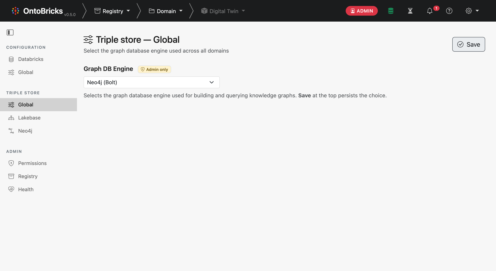
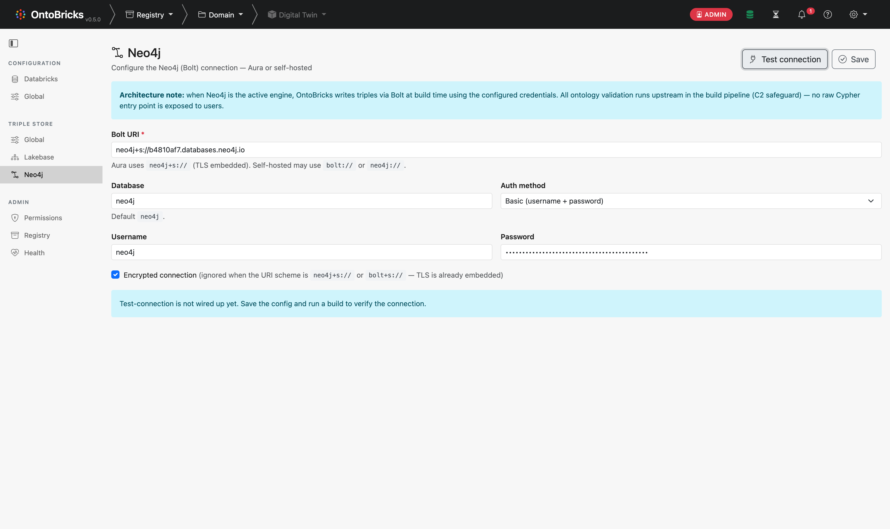
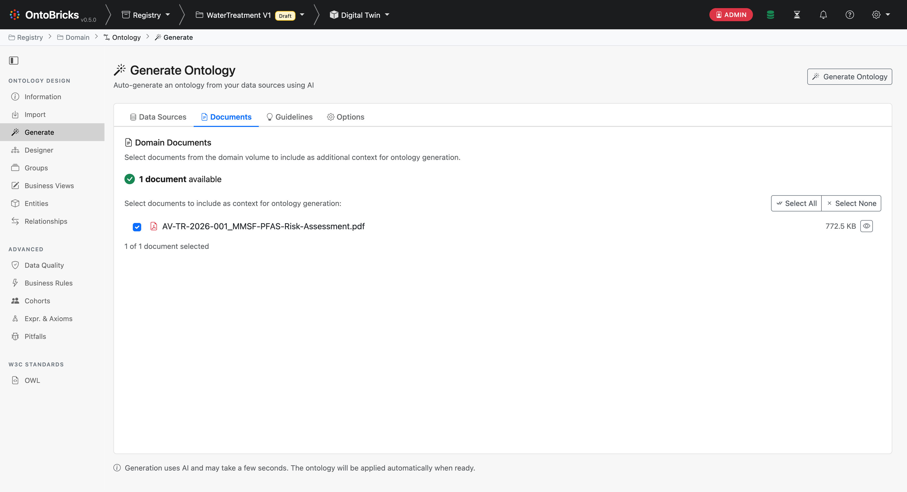
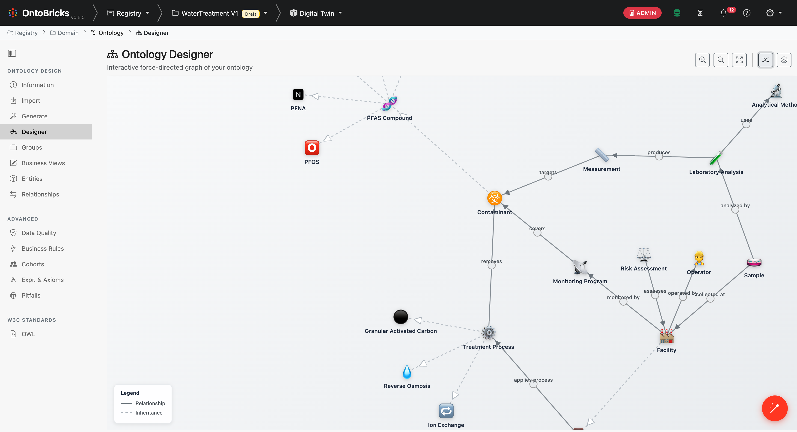
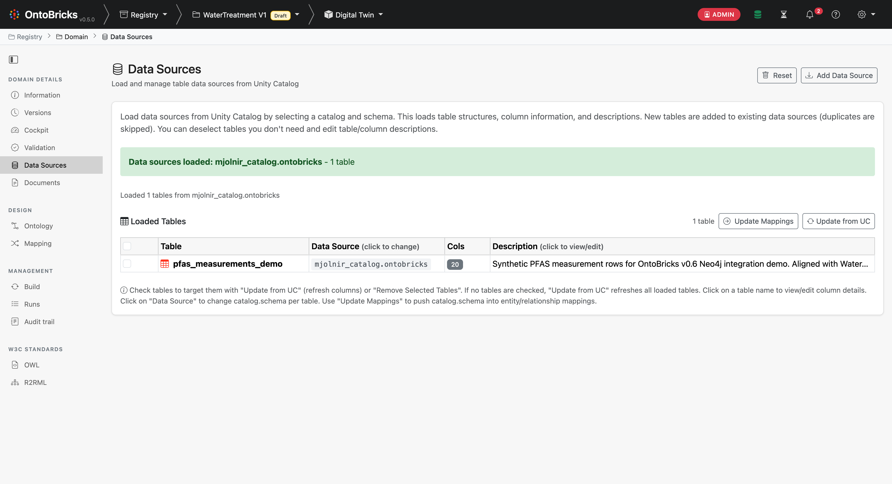
mjolnir_catalog.ontobricks.pfas_measurements_demo · 12 rows · 20 columns · synthetic but paper-aligned schema (facility / water source / process / contaminant / measurement / regulation).
06-data-source-loaded.png
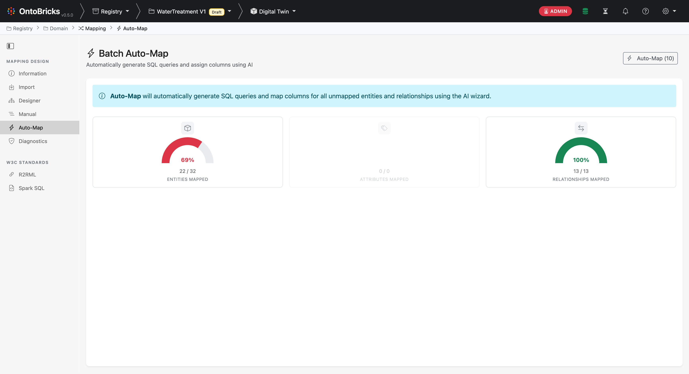
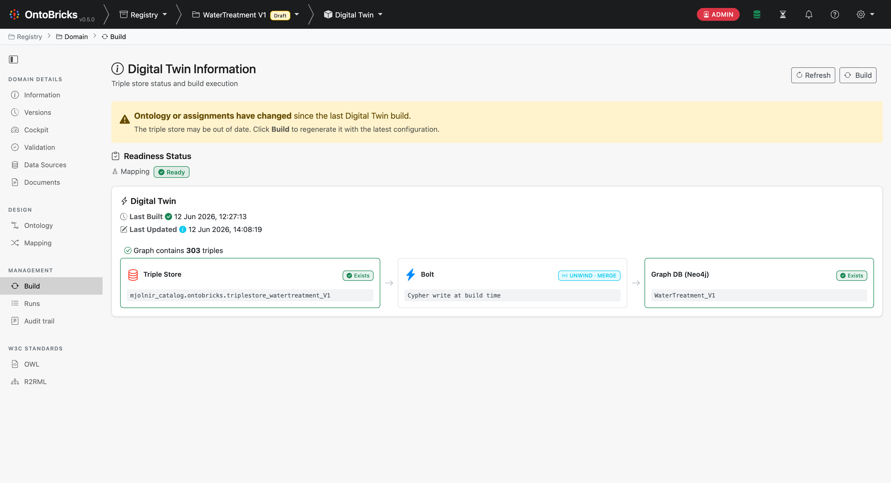
Triple Store → Bolt (Cypher UNWIND · MERGE) → Graph DB (Neo4j) · WaterTreatment_V1. The Bolt card is the Neo4j-specific bridge (mirrors the Lakeflow Sync card on Lakebase). Build wrote 303 triples.
10-build-success-303-triples-neo4j.png
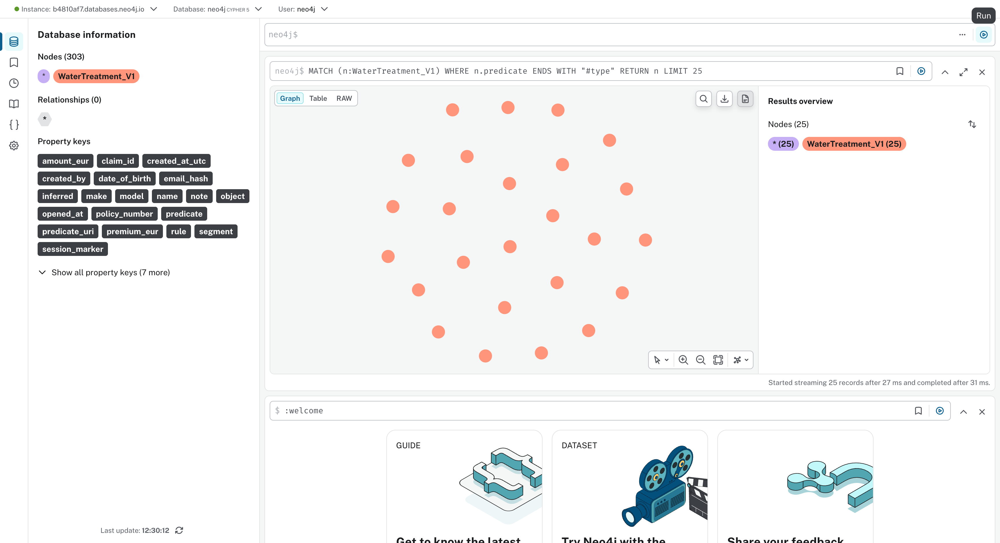
:WaterTreatment_V1 · 25 rdf:type nodes rendered (one per ontology class instantiated).
12-neo4j-browser-303-nodes-graph.png
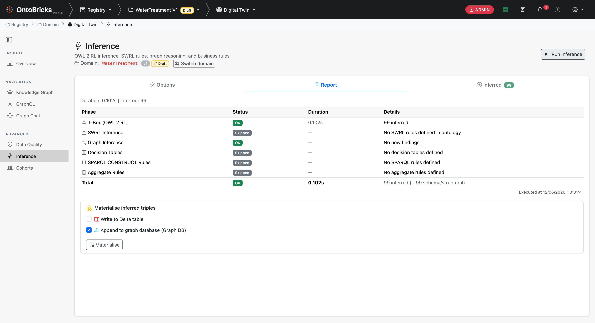
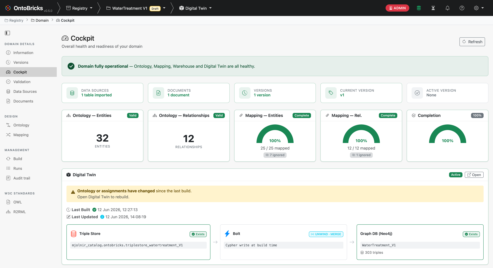
Triple Store → Bolt (UNWIND · MERGE) → Graph DB (Neo4j) · 303 triples. Before this PR the Cockpit was entirely engine-agnostic.
16-cockpit-neo4j-active.png
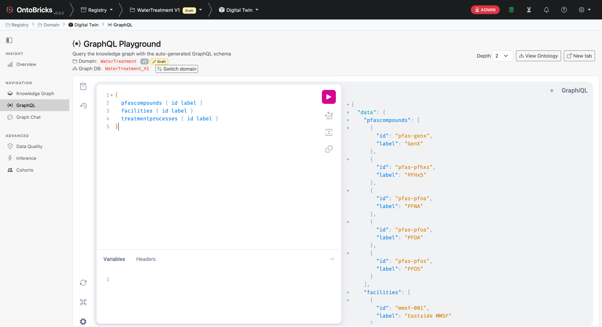
{ pfascompounds { id label } facilities { id label } treatmentprocesses { id label } } resolved transparently: 5 PFAS compounds (GenX, PFHxS, PFNA, PFOA, PFOS), 3 facilities (Eastside / Westport / Northvale MMSF), 6 treatment processes. The GraphQL service rewrites this into Cypher under the hood and queries Neo4j.
17-graphql-playground-watertreatment.png
GraphQL playground sends { pfascompounds { id label } }. The OntoBricks resolver calls two named-query methods on Neo4jStore. Every value is bound — no string interpolation.
Neo4jStore.find_subjects_by_type(...)MATCH (t:`WaterTreatment_V1`) WHERE t.predicate = $rdf_type AND t.object = $type_uri RETURN DISTINCT t.subject AS subject ORDER BY subject SKIP $offset LIMIT $limit
Neo4jStore.get_entity_metadata(...)MATCH (t:`WaterTreatment_V1`) WHERE t.predicate = $rdfs_label AND t.subject IN $subjects RETURN t.subject AS subject, t.object AS label
The only way Neo4j gets touched is through 16 named methods like the two on the left. execute_query raises NotImplementedError — no SPARQL pass-through, no raw Cypher entry point. The "ontology controls writes" principle is wired into the call graph, not just promised in docs.
Every value ($rdf_type, $type_uri, $subjects) is bound via the Neo4j driver's parameter map. No f"…" formatting, no str.format, no +. User input never reaches the Cypher parser as text.
Each triple = one node with subject/predicate/object properties. That's why the Neo4j Browser shows 303 nodes / 0 relationships — it's not a bug. Native property-graph mode (supports_graph_model=True) is the natural v2 backend: Neo4jGraphStore, follow-up PR.
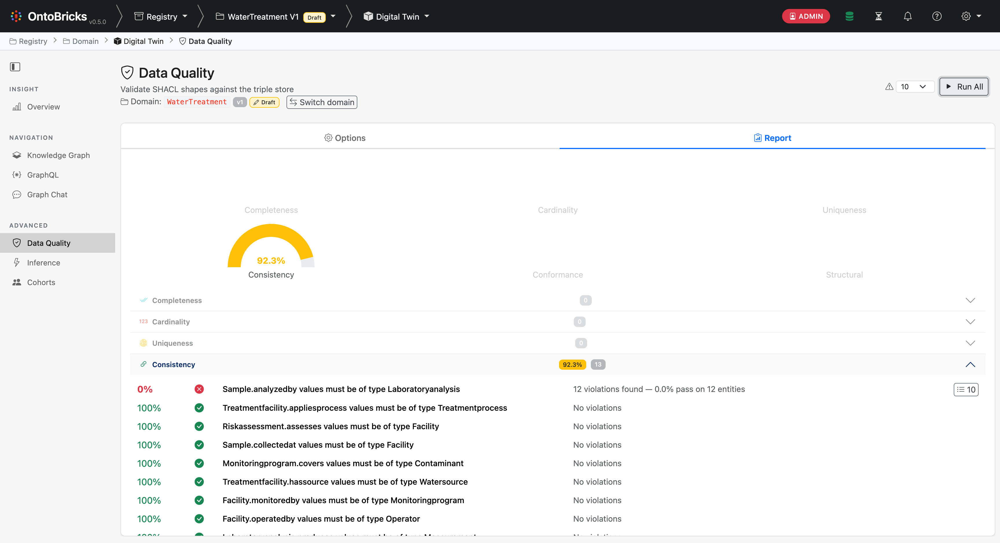
Sample.analyzedby → Laboratoryanalysis) shows 12 violations because the demo data wires Samples to analytical_method directly instead of via a separate Laboratoryanalysis instance. Exactly the kind of signal SHACL validation is built for.
18-data-quality-graph-on-neo4j.png
Every item of @benoitcayladbx's PR review punch-list landed as its own commit on top of the v0.6 demo. The deck slides that follow show each change live in prod.
NEO4J_PASSWORD env var (Databricks Apps secret bound via databricks.yml). Save endpoint strips clear-text from global_config. da9cae9_run emits one line: Cypher (n rows, ms): <flattened>. Params at DEBUG only, no credential leak. e8b523cv0.7.0 — pyproject + README + deploy default app name. 577b70fe63bfceNeo4jStore.py (1028 LoC) → façade + Connection + WriteOps + ReadOps. Fowler Large Class → Extract Class. 7a9a625RETURN 1 probe; placeholder removed. 820f607 + follow-upontobricks-070 · FEVM-Mjolnir · 2026-06-25
The next 5 slides are fresh screenshots + log excerpts from the deployed v0.7.0 app. Original v0.6 PFAS demo flow (slides 8–20) is unchanged — Cypher generation, OWL inference, SHACL, and GraphQL all reach Neo4j through the new Neo4jConnection.run path.
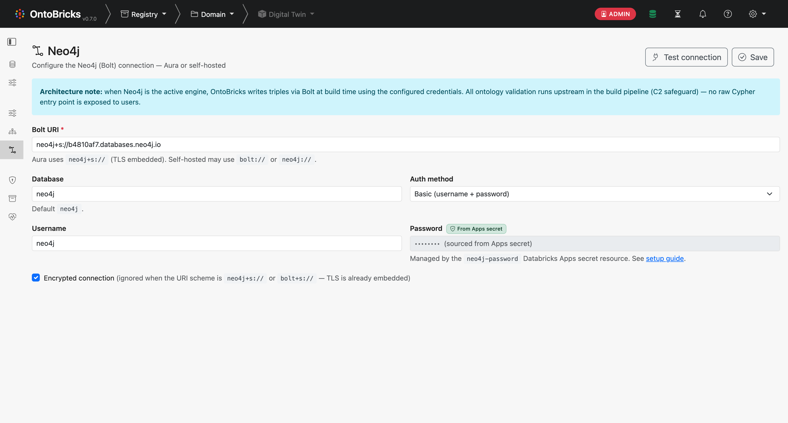
From Apps secret badge next to the Password label · input disabled with •••••••• (sourced from Apps secret) placeholder. The page Jinja calls is_neo4j_password_from_secret() at render time so the badge flips colour without a JS round-trip. Save endpoint SettingsService.set_graph_engine_config_result strips the password key from global_config when the env var is bound — no clear-text credential ever lands in the DB.
20-settings-neo4j-secret-badge.png
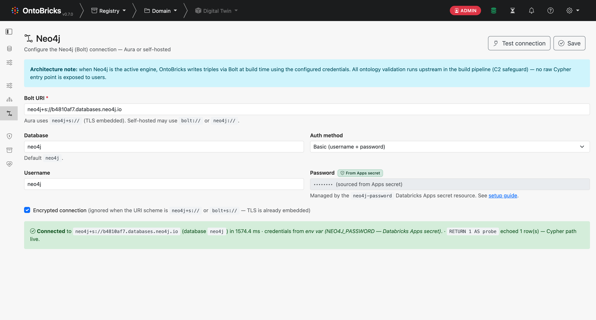
/settings/graph-engine/neo4j-test runs driver.verify_connectivity() + a RETURN 1 AS probe through Neo4jConnection.run — exercises the full secret resolve → driver → session → Cypher path. Green alert: Connected to neo4j+s://b4810af7.databases.neo4j.io (database neo4j) in 860.2 ms · credentials from env var (NEO4J_PASSWORD — Databricks Apps secret). Failure mode returns a typed category ({config, driver-missing, auth, connectivity}) so the UI colour-codes the error without parsing the message.
23-settings-neo4j-test-connection-result.png
INFO ontobricks.core.graphdb.neo4j.Neo4jConnection
_resolve_auth:169 |
Neo4j credentials sourced from
NEO4J_PASSWORD env var
INFO ontobricks.core.graphdb.neo4j.Neo4jConnection
get_driver:141 |
Neo4j driver opened for
neo4j+s://b4810af7.databases.neo4j.io
(database=neo4j)
DEBUG ontobricks.core.graphdb.neo4j.Neo4jConnection
run:215 | Cypher params: {}
INFO ontobricks.core.graphdb.neo4j.Neo4jConnection
run:221 |
Cypher (1 rows, 706.4 ms): RETURN 1 AS probe
DEBUG ontobricks.core.graphdb.neo4j.Neo4jConnection
close:151 | Neo4j driver closed
Triggered by clicking Settings → Neo4j → Test connection on ontobricks-070 · captured via databricks apps logs ontobricks-070.
… (truncated) marker.session.run) so bound params never carry the password. Params are DEBUG-only — kept out of the default INFO stream.ontobricks.core.graphdb.neo4j.Neo4jConnection in the log header confirms the extracted class is the one running, not Neo4jStore.RETURN 1 AS probe. Clicking KG filter → find_seed_subjects Cypher emitted next. Operators correlate without instrumentation.<option value="lakebase"> rendered as default (HTML first paint).ts-global → fetches /settings/graph-engine.sel.value = 'neo4j' snap. Visible flicker. (Benoit, 2026-06-18: "je vois pas Neo4j")e63bfceSettingsService.get_graph_engine_result(...) before render.<option value="neo4j" {% if graph_engine == "neo4j" %}selected{% endif %}> — correct on first paint.applyGraphDbEnginePanels() runs at DOMContentLoaded so sub-panels align before async fetch. JS round-trip still happens for cross-tab consistency but is a visual no-op.Neo4jStore.py · 1028 LoC → 4 filesFowler Large Class → Extract Class. Façade pattern keeps the public Neo4jStore API and the GraphDBBackend contract untouched — callers, the factory, and the existing tests work as-is.
┌──────────────────────────────────────┐
│ Neo4jStore (façade, 435 LoC) │
│ • GraphDBBackend interface │
│ • Capability flags │
│ • execute_query → NotImplementedErr │
│ • Thin delegators │
└────────────────┬─────────────────────┘
│ composes
┌─────────────┼──────────────┐
▼ ▼ ▼
Neo4jConn- Neo4jWrite- Neo4jRead-
ection Ops Ops
(227 LoC) (156 LoC) (614 LoC)
• auth • create_table • get_aggregate_stats
• driver • drop_table • find_subjects_by_type
• run + INFO • insert • find_seed_subjects
log • delete • bfs_traversal
• Cypher • optimize • expand_entity_neighbors
flatten • cohort • get_entity_metadata
• sanitise_ • paginated_*
label • transitive_closure
• symmetric_expand
• shortest_path
Neo4jStore(...) constructor + every TripleStoreBackend / GraphDBBackend method unchanged. Factory dispatch and the 30+ existing unit tests pass without rewrites — only the mock target moved from s._run to s._connection.run (with a back-compat alias)._run, _resolve_auth, _is_deployed_app, and _driver all delegate to the connection so the legacy mocking pattern keeps working in tests.src/.coding_rules.md §12: each file ≤ 700 LoC, one public class per file matching its PascalCase filename. Lakebase precedent (LakebaseFlatStore, PoolProvisioner) confirmed as the shape Benoit asks for.triplestore_page_context — _raw if _raw == "lakebase" else "lakebase" silently coerced every non-Lakebase engine to lakebase. Now passes through.:Triple:<store> compound. Switched to single backtick-quoted label.app.yaml.template uv-run lacked --extra neo4j. Added.global_config — Save endpoint now strips the field when NEO4J_PASSWORD env var is bound.{% if graph_engine == "..." %}selected{% endif %}.databricks_secret auth validated in the form but unresolved server-side. Follow-up.supports_graph_model=False) — native property-graph mode is an out-of-scope v2 backend.develop
v0.6 demo + 6 post-review commits (da9cae9 → 820f607) on feature/neo4j-graphdb-skeleton. All five items of the 2026-06-18 review punch-list addressed + one bonus (Test connection wired). Verified live on ontobricks-070 on FEVM-Mjolnir: Connected … 860 ms · credentials from env var (NEO4J_PASSWORD — Databricks Apps secret). Reviewer may optionally re-run tests/integration/neo4j_e2e_smoke.py against any Neo4j endpoint.